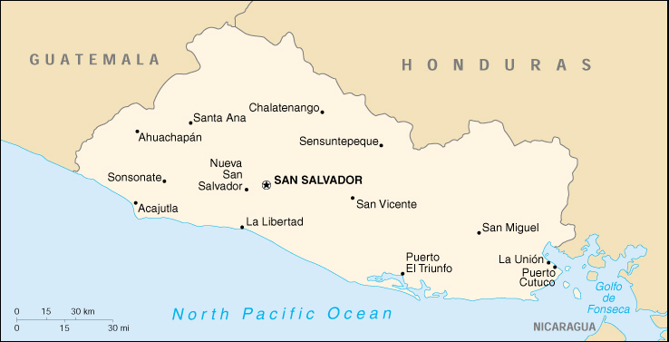

|
El Salvador | |
| Introduction Geography People Government Economy Communications Transportation Military Transnational Issues | ||
|  | ||
| El Salvador | Introduction | Top of Page |
| Background: | El Salvador achieved independence from Spain in 1821 and from the Central American Federation in 1839. A 12-year civil war, which cost the lives of some 75,000 people, was brought to a close in 1992 when the government and leftist rebels signed a treaty that provided for military and political reforms. |
| El Salvador | Geography | Top of Page |
| Location: | Middle America, bordering the North Pacific Ocean, between Guatemala and Honduras |
| Geographic coordinates: | 13 50 N, 88 55 W |
| Map references: | Central America and the Caribbean |
| Area: |
total:
21,040 sq km
land: 20,720 sq km water: 320 sq km |
| Area - comparative: | slightly smaller than Massachusetts |
| Land boundaries: |
total:
545 km
border countries: Guatemala 203 km, Honduras 342 km |
| Coastline: | 307 km |
| Maritime claims: | territorial sea: 200 NM |
| Climate: | tropical; rainy season (May to October); dry season (November to April); tropical on coast; temperate in uplands |
| Terrain: | mostly mountains with narrow coastal belt and central plateau |
| Elevation extremes: |
lowest point:
Pacific Ocean 0 m
highest point: Cerro El Pital 2,730 m |
| Natural resources: | hydropower, geothermal power, petroleum, arable land |
| Land use: |
arable land:
27%
permanent crops: 8% permanent pastures: 29% forests and woodland: 5% other: 31% (1993 est.) |
| Irrigated land: | 1,200 sq km (1993 est.) |
| Natural hazards: | known as the Land of Volcanoes; frequent and sometimes very destructive earthquakes and volcanic activity |
| Environment - current issues: | deforestation; soil erosion; water pollution; contamination of soils from disposal of toxic wastes; Hurricane Mitch damage |
| Environment - international agreements: |
party to:
Biodiversity, Climate Change, Climate Change-Kyoto Protocol, Desertification, Endangered Species, Hazardous Wastes, Nuclear Test Ban, Ozone Layer Protection, Wetlands
signed, but not ratified: Law of the Sea |
| Geography - note: | smallest Central American country and only one without a coastline on Caribbean Sea |
| El Salvador | People | Top of Page |
| Population: | 6,237,662 (July 2001 est.) |
| Age structure: |
0-14 years:
37.68% (male 1,198,623; female 1,151,584)
15-64 years: 57.27% (male 1,693,865; female 1,878,254) 65 years and over: 5.05% (male 142,345; female 172,991) (2001 est.) |
| Population growth rate: | 1.85% (2001 est.) |
| Birth rate: | 28.67 births/1,000 population (2001 est.) |
| Death rate: | 6.18 deaths/1,000 population (2001 est.) |
| Net migration rate: | -3.95 migrant(s)/1,000 population (2001 est.) |
| Sex ratio: |
at birth:
1.05 male(s)/female
under 15 years: 1.04 male(s)/female 15-64 years: 0.9 male(s)/female 65 years and over: 0.82 male(s)/female total population: 0.95 male(s)/female (2001 est.) |
| Infant mortality rate: | 28.4 deaths/1,000 live births (2001 est.) |
| Life expectancy at birth: |
total population:
70.03 years
male: 66.43 years female: 73.81 years (2001 est.) |
| Total fertility rate: | 3.34 children born/woman (2001 est.) |
| HIV/AIDS - adult prevalence rate: | 0.6% (1999 est.) |
| HIV/AIDS - people living with HIV/AIDS: | 20,000 (1999 est.) |
| HIV/AIDS - deaths: | 1,300 (1999 est.) |
| Nationality: |
noun:
Salvadoran(s)
adjective: Salvadoran |
| Ethnic groups: | mestizo 90%, Amerindian 1%, white 9% |
| Religions: |
Roman Catholic 86%
note: there is extensive activity by Protestant groups throughout the country; by the end of 1992, there were an estimated 1 million Protestant evangelicals in El Salvador |
| Languages: | Spanish, Nahua (among some Amerindians) |
| Literacy: |
definition:
age 10 and over can read and write
total population: 71.5% male: 73.5% female: 69.8% (1995 est.) |
| El Salvador | Government | Top of Page |
| Country name: |
conventional long form:
Republic of El Salvador
conventional short form: El Salvador local long form: Republica de El Salvador local short form: El Salvador |
| Government type: | republic |
| Capital: | San Salvador |
| Administrative divisions: | 14 departments (departamentos, singular - departamento); Ahuachapan, Cabanas, Chalatenango, Cuscatlan, La Libertad, La Paz, La Union, Morazan, San Miguel, San Salvador, Santa Ana, San Vicente, Sonsonate, Usulutan |
| Independence: | 15 September 1821 (from Spain) |
| National holiday: | Independence Day, 15 September (1821) |
| Constitution: | 23 December 1983 |
| Legal system: | based on civil and Roman law, with traces of common law; judicial review of legislative acts in the Supreme Court; accepts compulsory ICJ jurisdiction, with reservations |
| Suffrage: | 18 years of age; universal |
| Executive branch: |
chief of state:
President Francisco FLORES Perez (since 1 June 1999); Vice President Carlos QUINTANILLA Schmidt (since 1 June 1999); note - the president is both the chief of state and head of government
head of government: President Francisco FLORES Perez (since 1 June 1999); Vice President Carlos QUINTANILLA Schmidt (since 1 June 1999); note - the president is both the chief of state and head of government cabinet: cabinet selected by the president elections: president and vice president elected on the same ticket by popular vote for five-year terms; election last held 7 March 1999 (next to be held NA March 2004) election results: Francisco FLORES Perez elected president; percent of vote - Francisco FLORES (ARENA) 52%, Facundo GUARDADO (FMLN) 29%, Ruben ZAMORA (CDU) 7.5%, other (no individual above 3%) 11.5% |
| Legislative branch: |
unicameral Legislative Assembly or Asamblea Legislativa (84 seats; members are elected by direct popular vote to serve three-year terms)
elections: last held 12 March 2000 (next to be held NA March 2003) election results: percent of vote by party - ARENA 36.1%, FMLN 35.14%, PCN 8.76%, PDC 7.08%, CD 5.32%, PAN 3.75%, USC 1.47%, PLD 1.29%; seats by party - ARENA 28, FMLN 31, PCN 14, PDC 5, CD 3, PAN 1, independent 2 |
| Judicial branch: | Supreme Court or Corte Suprema (judges are selected by the Legislative Assembly) |
| Political parties and leaders: | Christian Democratic Party or PDC [Rene AGUILUZ]; Democratic Convergence or CD (includes PSD, MNR, MPSC) [Ruben ZAMORA, secretary general]; Democratic Party or PD [Jorge MELENDEZ]; Farabundo Marti National Liberation Front or FMLN [Fabio CASTILLO]; Liberal Democratic Party or PLD [Kirio Waldo SALGADO, president]; National Action Party or PAN [Gustavo Rogelio SALINAS, secretary general]; National Conciliation Party or PCN [Ciro CRUZ Zepeda, president]; National Republican Alliance or ARENA [Walter ARAUJO]; Social Christian Union or USC (formed by the merger of Christian Social Renewal Party or PRSC and Unity Movement or MU) [Abraham RODRIGUEZ, president] |
| Political pressure groups and leaders: | labor organizations - Electrical Industry Union of El Salvador or SIES; Federation of the Construction Industry, Similar Transport and other activities, or FESINCONTRANS; National Confederation of Salvadoran Workers or CNTS; National Union of Salvadoran Workers or UNTS; Port Industry Union of El Salvador or SIPES; Salvadoran Union of Ex-Petrolleros and Peasant Workers or USEPOC; Salvadoran Workers Central or CTS; Workers Union of Electrical Corporation or STCEL; business organizations - National Association of Small Enterprise or ANEP; Salvadoran Assembly Industry Association or ASIC; Salvadoran Industrial Association or ASI |
| International organization participation: | BCIE, CACM, ECLAC, FAO, G-77, IADB, IAEA, IBRD, ICAO, ICFTU, ICRM, IDA, IFAD, IFC, IFRCS, ILO, IMF, IMO, Intelsat, Interpol, IOC, IOM, ISO (correspondent), ITU, LAES, LAIA (observer), MINURSO, NAM (observer), OAS, OPANAL, OPCW, PCA, UN, UNCTAD, UNESCO, UNIDO, UPU, WCL, WFTU, WHO, WIPO, WMO, WToO, WTrO |
| Diplomatic representation in the US: |
chief of mission:
Ambassador Rene Antonio LEON Rodriguez
chancery: 2308 California Street NW, Washington, DC 20008 telephone: [1] (202) 265-9671 consulate(s) general: Chicago, Dallas, Houston, Los Angeles, Miami, New Orleans, New York, and San Francisco consulate(s): Boston |
| Diplomatic representation from the US: |
chief of mission:
Ambassador Rose M. LIKINS
embassy: Boulevard Santa Elena Final, Antiguo Cuscatlan, La Libertad, San Salvador mailing address: Unit 3116, APO AA 34023 telephone: [503] 278-4444 FAX: [503] 278-6011 |
| Flag description: | three equal horizontal bands of blue (top), white, and blue with the national coat of arms centered in the white band; the coat of arms features a round emblem encircled by the words REPUBLICA DE EL SALVADOR EN LA AMERICA CENTRAL; similar to the flag of Nicaragua, which has a different coat of arms centered in the white band - it features a triangle encircled by the words REPUBLICA DE NICARAGUA on top and AMERICA CENTRAL on the bottom; also similar to the flag of Honduras, which has five blue stars arranged in an X pattern centered in the white band |
| El Salvador | Economy | Top of Page |
| Economy - overview: | El Salvador is a struggling Central American economy which has been suffering from a weak tax collection system, factory closings, the aftermaths of Hurricane Mitch of 1998 and the devastating earthquakes of early 2001, and weak world coffee prices. On the bright side, in recent years inflation has fallen to single digit levels, and total exports have grown substantially. The trade deficit has been offset by remittances (an estimated $1.6 billion in 2000) from Salvadorans living abroad and by external aid. As of 1 January 2001, the US dollar was made legal tender alongside the colon. |
| GDP: | purchasing power parity - $24 billion (2000 est.) |
| GDP - real growth rate: | 2.5% (2000 est.) |
| GDP - per capita: | purchasing power parity - $4,000 (2000 est.) |
| GDP - composition by sector: |
agriculture:
12%
industry: 28% services: 60% (1999 est.) |
| Population below poverty line: | 48% (1999 est.) |
| Household income or consumption by percentage share: |
lowest 10%:
1.2%
highest 10%: 38.3% (1995) |
| Inflation rate (consumer prices): | 2.5% (2000 est.) |
| Labor force: | 2.35 million (1999) |
| Labor force - by occupation: | agriculture 30%, industry 15%, services 55% (1999 est.) |
| Unemployment rate: | 10% (2000 est.) |
| Budget: |
revenues:
$1.8 billion
expenditures: $2.2 billion, including capital expenditures of $NA (1999 est.) |
| Industries: | food processing, beverages, petroleum, chemicals, fertilizer, textiles, furniture, light metals |
| Industrial production growth rate: | 5% (2000 est.) |
| Electricity - production: | 3.641 billion kWh (1999) |
| Electricity - production by source: |
fossil fuel:
45.65%
hydro: 41.01% nuclear: 0% other: 13.34% (1999) |
| Electricity - consumption: | 3.638 billion kWh (1999) |
| Electricity - exports: | 208 million kWh (1999) |
| Electricity - imports: | 460 million kWh (1999) |
| Agriculture - products: | coffee, sugar, corn, rice, beans, oilseed, cotton, sorghum; shrimp; beef, dairy products |
| Exports: | $2.8 billion (f.o.b., 2000) |
| Exports - commodities: | offshore assembly exports, coffee, sugar, shrimp, textiles, chemicals, electricity |
| Exports - partners: | US 63%, Guatemala 11%, Honduras 7%, Costa Rica 4% (1999) |
| Imports: | $4.6 billion (f.o.b., 2000) |
| Imports - commodities: | raw materials, consumer goods, capital goods, fuels, foodstuffs, petroleum, electricity |
| Imports - partners: | US 52%, Guatemala 9%, Mexico 6%, Costa Rica 3% (1999) |
| Debt - external: | $4.1 billion (2000 est.) |
| Economic aid - recipient: | total $252 million; $57 million from US (1999 est.) |
| Currency: | Salvadoran colon (SVC); US dollar (USD) |
| Currency code: | SVC; USD |
| Exchange rates: | Salvadoran colones per US dollar - 8.755 (fixed rate since 1993) |
| Fiscal year: | calendar year |
| El Salvador | Communications | Top of Page |
| Telephones - main lines in use: | 380,000 (1998) |
| Telephones - mobile cellular: | 40,163 (1997) |
| Telephone system: |
general assessment:
NA
domestic: nationwide microwave radio relay system international: satellite earth station - 1 Intelsat (Atlantic Ocean); connected to Central American Microwave System |
| Radio broadcast stations: | AM 61 (plus 24 repeaters), FM 30, shortwave 0 (1998) |
| Radios: | 2.75 million (1997) |
| Television broadcast stations: | 5 (1997) |
| Televisions: | 600,000 (1990) |
| Internet country code: | .sv |
| Internet Service Providers (ISPs): | 4 (2000) |
| Internet users: | 40,000 (2000) |
| El Salvador | Transportation | Top of Page |
| Railways: |
total:
562 km
narrow gauge: 562 km 0.914-m gauge note: length of route which is operational is reduced to 283 km by disuse and lack of maintainance (2001) |
| Highways: |
total:
10,029 km
paved: 1,986 km (including 327 km of expressways) unpaved: 8,043 km (1997) |
| Waterways: | Rio Lempa partially navigable |
| Ports and harbors: | Acajutla, Puerto Cutuco, La Libertad, La Union, Puerto El Triunfo |
| Merchant marine: | none (2000 est.) |
| Airports: | 83 (2000 est.) |
| Airports - with paved runways: |
total:
4
over 3,047 m: 1 1,524 to 2,437 m: 1 914 to 1,523 m: 2 (2000 est.) |
| Airports - with unpaved runways: |
total:
79
914 to 1,523 m: 17 under 914 m: 62 (2000 est.) |
| Heliports: | 1 (2000 est.) |
| El Salvador | Military | Top of Page |
| Military branches: | Army, Navy, Air Force |
| Military manpower - military age: | 18 years of age |
| Military manpower - availability: | males age 15-49: 1,464,898 (2001 est.) |
| Military manpower - fit for military service: | males age 15-49: 929,263 (2001 est.) |
| Military manpower - reaching military age annually: | males: 68,103 (2001 est.) |
| Military expenditures - dollar figure: | $112 million (FY99) |
| Military expenditures - percent of GDP: | 0.7% (FY99) |
| El Salvador | Transnational Issues | Top of Page |
| Disputes - international: | with respect to the maritime boundary in the Golfo de Fonseca, the ICJ referred to the line determined by the 1900 Honduras-Nicaragua Mixed Boundary Commission and advised that some tripartite resolution among El Salvador, Honduras and Nicaragua likely would be required |
| Illicit drugs: | transshipment point for cocaine; marijuana produced for local consumption; domestic drug abuse on the rise |
{kind=link}
{kind=link}